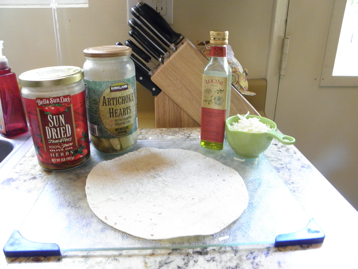

8-16-2012
Artichoke Heart and Sun-dried Tomato Tortilla Pizza
.png)
This pizza makes the perfect midday snack, easy lunch, or party appetizer. With the healthy benefits of artichoke hearts, which are full of antioxidants and fiber, and sun-dried tomatoes, which contain vitamin C, antioxidants, and monounsaturated "good" fats, this pizza tastes great with or without extra toppings. It's rich, filling, and full of flavor!
Ingredients:
- Burrito Sized Flour Tortilla
- Extra Virgin Olive Oil
- 1/2 cup chopped Sun-dried Tomato
- 1/2 cup chopped Artichoke Heart
- 1/4 cup Mozarella Cheese (optional)
Directions:
- Preheat oven to 350 F.
- Drizzle tortilla lightly with olive oil.
- Chop up the tomatoes and artichoke hearts, roughly 1/2 cup of each. You can chop more or less based on you're preference.
- Cover the tortilla with the chopped artichoke hearts and sun-dried tomatoes
- Sprinkle the mozzarella cheese lightly over the top.
- Place tortilla pizza on a pizza stone or cookie sheet.
- Bake for 10 - 12 minutes, checking periodically to make sure the edges aren't burning.
- Remove pizza from oven, allow to cool, and ENJOY!

Check here for more great recipes!